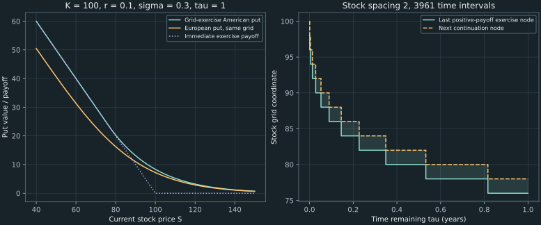

17. Finite differences and early exercise
For a non-dividend-paying stock and strike both equal to 100, one year remaining, interest rate 10%, and volatility 30%, the European put is 7.217875386. Allowing early exercise raises the value to about 8.34. A 400-interval stock grid below gives 8.335965779; an independent 2000-step binomial calculation gives 8.337132562. Building a credible numerical answer requires a stable update and a correct exercise constraint, not merely taking the maximum after an arbitrary computation.
We derive the lecture's explicit scheme, identify its monotonicity restrictions, and expose a globally unstable workshop grid whose displayed local coefficients look innocuous. Then we formulate early exercise as an obstacle, compute the exercise region, and obtain sensitivities with their actual data requirements. Implicit and Crank–Nicolson methods are introduced through their equations and limitations.
Source spine: recording 48, discretizing the pricing equation, recording 49, American exercise and Greeks, and recording 50, the grid workshop. Chapter 16 covers the earlier payoff/boundary part of recording 50. The stability proof, local drift repair, numerical counterexample, independent refinement, and complementarity explanation are elaborations.
17.1 Reverse time before defining a grid Recording 48, 3:27
Keep the constant-coefficient, no-dividend assumptions of Chapter 16. Let $\tau=T-t$ be time remaining and $U(S,\tau)=V(S,T-\tau)$. The backward calendar-time pricing equation becomes the forward initial-value problem
\[ U_\tau=\mathcal L U,\qquad \mathcal L U=\tfrac12\sigma^2S^2U_{SS}+rSU_S-rU, \qquad U(S,0)=g(S).\tag{17.1} \]Here $g(S)$ is the terminal call or put payoff. Increasing $\tau$ starts at expiry and moves toward the desired present valuation. This is the same direction as moving backward through calendar dates. It is not a forecast of future option prices along a realized stock path.
Choose a numerical upper boundary $S_{\max}$, $M$ equal stock intervals of width $\Delta S=S_{\max}/M$, and $N$ time intervals of width $\Delta\tau=T/N$. There are $M+1$ stock nodes $S_i=i\Delta S$ and $N+1$ time levels $\tau_k=k\Delta\tau$. Write $U_i^k\approx U(S_i,\tau_k)$. The starting row $k=0$ is known from the payoff. Interior nodes are $i=1,\ldots,M-1$; the endpoints need separate values at every time level.
The public solver restricts $r\geq0$, $\sigma>0$, $T>0$, and $S_{\max}>K>0$. This supports the monotonicity and American boundary arguments used here. It returns the stock-grid values and linearly interpolates when today's spot is not a node. The upper boundary remains an approximation on an unbounded stock model, as quantified in Chapter 16; choosing three or four times the strike is a heuristic requiring an accuracy check.
17.2 Derive the three-point explicit update Recording 48, 8:22
At a known row $k$, approximate $U_S$ by $(U_{i+1}^k-U_{i-1}^k)/(2\Delta S)$ and $U_{SS}$ by $(U_{i+1}^k-2U_i^k+U_{i-1}^k)/(\Delta S)^2$. Expanding a smooth function at $S_i$ gives
\[ \begin{aligned} \frac{U(S_i+\Delta S)-U(S_i-\Delta S)}{2\Delta S} &=U_S+\frac{(\Delta S)^2}{6}U_{SSS}+O((\Delta S)^4),\\ \frac{U(S_i+\Delta S)-2U(S_i)+U(S_i-\Delta S)}{(\Delta S)^2} &=U_{SS}+\frac{(\Delta S)^2}{12}U_{SSSS}+O((\Delta S)^4). \end{aligned}\tag{17.2} \]For example, six continuous stock derivatives on the local interval suffice for the displayed spatial remainders, and a bounded second time derivative suffices for the first-order time estimate. With fewer derivatives one states the corresponding weaker Taylor remainder rather than asserting an unavailable derivative bound. Forward differencing in remaining time gives $(U_i^{k+1}-U_i^k)/\Delta\tau=U_\tau+O(\Delta\tau)$. Substituting these differences into (17.1) and using $S_i=i\Delta S$ cancels the explicit powers of stock spacing:
\[ U_i^{k+1}=a_iU_{i-1}^k+b_iU_i^k+c_iU_{i+1}^k,\tag{17.3} \] \[ a_i=\frac{\Delta\tau}{2}(\sigma^2i^2-ri),\quad b_i=1-\Delta\tau(\sigma^2i^2+r),\quad c_i=\frac{\Delta\tau}{2}(\sigma^2i^2+ri).\tag{17.4} \]In the lecture's calendar-time notation, the same recurrence computes the unknown earlier level $j$ from the known later level $j+1$. Our $k+1$ instead has more time remaining. Both conventions start from expiry; mixing their superscripts would create an incorrect update.
The local differential-equation residual for smooth solutions is $O(\Delta\tau+(\Delta S)^2)$. That consistency statement does not by itself prove convergence. The payoff is nonsmooth at the strike, the American exercise boundary creates further regularity issues, and an unstable recurrence can amplify errors despite a small formal truncation error.
Discounting is approximate in this stencil
Adding the coefficients gives $a_i+b_i+c_i=1-r\Delta\tau$. This is the first-order approximation to $e^{-r\Delta\tau}$, not an exact exponential discount factor. Only when all coefficients are nonnegative may they be divided by their positive row sum to form normalized weights. Negative coefficients cannot be interpreted as probabilities, and even nonnegative numerical weights are not the exact continuous lognormal transition law.
At each time level, evaluate the boundary values at the appropriate remaining time. European calls use zero at $S=0$ and the high-stock approximation $S_{\max}-Ke^{-r\tau_k}$; puts use $Ke^{-r\tau_k}$ and an approximate zero. The American put's lower boundary will change to $K$. Boundary values are part of the scheme, not optional cosmetic assignments.
Compute every new interior value from the same old row. Overwriting that row from left to right would let a newly computed left neighbor enter later updates and silently change the scheme. Two arrays suffice for the price calculation: $O(M)$ storage and $O(MN)$ arithmetic. Retaining every time slice costs $O(MN)$ storage and is useful only when the saved history is actually required. Retaining the exercise-transition history used by the figure adds $O(N)$ storage to the rolling price calculation.
17.3 Check every weight before trusting the price
A numerical update is monotone if increasing any old input value cannot decrease the new value. For the linear explicit rule, nonnegative $a_i,b_i,c_i$ give this property directly. With $r\geq0$ the row sum is at most one, so perturbations in an old row are not amplified in the maximum norm:
\[ |e_i^{k+1}|\leq a_i|e_{i-1}^k|+b_i|e_i^k|+c_i|e_{i+1}^k| \leq(1-r\Delta\tau)\|e^k\|_\infty\leq\|e^k\|_\infty.\tag{17.5} \]This comparison assumes the same boundary data; boundary perturbations must also be included when they differ. A local residual $\rho_i^k$ adds a term $\Delta\tau\|\rho^k\|_\infty$ to the bound. Repeating for $N$ steps accumulates at most $T\max_k\|\rho^k\|_\infty$ in addition to initial and boundary errors. This is how consistency becomes useful under stability on a fixed domain. It does not certify unknown smoothness or the finite-domain approximation.
Two restrictions have different remedies
For the central stencil and $r\geq0$, the off-diagonal conditions are satisfied at all interior nodes only if $\sigma^2i\geq r$. The middle coefficient additionally requires
\[ \Delta\tau\leq\frac1{\sigma^2(M-1)^2+r}.\tag{17.6} \]Increasing the number of time intervals repairs an excessive time step, but it cannot change the sign of an off-diagonal coefficient. In the running $r=0.1$, $\sigma=0.3$ case, the central lower generator entry at $i=1$ is $(0.09-0.1)/2=-0.005$. Multiplying it by a smaller positive $\Delta\tau$ leaves it negative. Rejecting only a large time step would miss this issue.
A declared one-sided drift repair
The companion keeps centered drift wherever its off-diagonal entries are nonnegative. At other nodes it uses the forward stock difference $(U_{i+1}-U_i)/\Delta S$ for the positive coefficient $rS U_S$. The resulting generator entries are
\[ \ell_i=\tfrac12\sigma^2i^2,\qquad u_i=\tfrac12\sigma^2i^2+ri,\qquad L_{ii}=-(\ell_i+u_i+r).\tag{17.7} \]Both off-diagonal entries are nonnegative. This is a one-sided approximation to the first derivative, with first-order spatial error there, rather than an unchanged second-order central stencil. In the running example it affects only the first interior stock node. The implementation reports its drift convention and uses $a_i=\Delta\tau\ell_i$, $b_i=1+\Delta\tau L_{ii}$, and $c_i=\Delta\tau u_i$ after this repair.
For the selected generator, the automatic time count is $N=\lceil T\max_i(-L_{ii})/0.9\rceil$, at least one. This leaves a margin below the nonnegative-middle-weight limit. An explicitly supplied $N$ is still checked against all actual coefficients. This safety margin concerns numerical weights, not an accuracy guarantee. Central mode is separately available to reproduce and diagnose the lecture's literal stencil.
Agnès Tourin's Chapter 12 in Nizar Touzi's notes (2010), §§12.2.1–12.2.2, pp.192–194, discusses monotonicity for diffusion grids and a one-sided drift approximation for the Black–Scholes operator. Equations (17.5)–(17.7) state the specific finite-stock-grid argument used here. No general nonlinear convergence theorem is being claimed for arbitrary boundary rules.
17.4 A locally plausible workshop stencil can fail globally Recording 50, 12:37
The grid workshop chooses $S_{\max}=250$, $M=100$, $N=300$, $T=0.75$, $\sigma=0.28$, and $r=0.045$. Hence $\Delta S=2.5$ and $\Delta\tau=0.0025$. A current stock of 90 is exactly node $i=36$; node 25 is $S_{25}=62.5$. The earlier strike-75 payoff case is finished in Chapter 16. The later early-exercise illustration uses strike 90, which we also declare explicitly for the pricing diagnostic below.
At $i=25$, $\sigma^2i^2=49$ and $ri=1.125$. Substitution into the central stencil gives $a_{25}=0.05984375$, $b_{25}=0.8773875$, and $c_{25}=0.06265625$. Their sum is 0.9998875, exactly $1-r\Delta\tau$ in mathematical arithmetic. These three weights are nonnegative and their sum is sensible. That is a useful local arithmetic check, but not a check of the whole grid.
At the last interior node $i=99$, the middle coefficient is $b_{99}=-0.9211085$. The monotone-step condition requires
\[ N\geq\left\lceil T[\sigma^2(99)^2+r]\right\rceil=577.\tag{17.8} \]The given 300 steps therefore fail the global nonnegative-weight condition. Smaller-index coefficients cannot establish stability at larger indices because diffusion strength grows as $i^2$ in this uniform-stock coordinate.
Demonstrate the failure rather than infer everything from a sign
A negative weight proves failure of monotonicity; it does not alone prove instability for every possible scheme. Here the companion additionally constructs the 99-by-99 interior propagation matrix for homogeneous boundary perturbations. Its computed spectral radius is approximately 2.509878108, exceeding one. Repeated updates can therefore amplify an eigenmode. This is a separate check of this particular recurrence.
For the declared strike-90 European put, deliberately bypassing the safety check produces a final maximum absolute grid value around $3.27\times10^{71}$ and an interpolated spot-90 value around $-2.58\times10^{24}$. These are diagnostic failed-computation outputs, not option prices. The normal API rejects that setup. With the same stock domain and 1000 time intervals, it gives 7.117021251 at spot 90, compared with the analytic 7.129825997. That remaining difference reflects approximation error; removing instability has not made a finite grid exact.
The ratio $250/90$ is also below three, so it should not be described as within a three-to-four-strike range. More fundamentally, any such range is only a starting heuristic. A domain check should enlarge $S_{\max}$ while controlling stock and time spacing, rather than accidentally confound boundary error with a coarser or finer grid.
17.5 Early exercise is an obstacle, not the European PDE everywhere Recording 49, 0:45
An American holder can take $g(S)$ now or continue with the remaining right. Consequently its value is at least the immediate exercise payoff. It is also at least the discounted expected value obtained by deliberately continuing for a short period. At smooth interior points, expanding that continuation inequality as in Chapter 16 gives $U_\tau-\mathcal L U\geq0$. Where exercising is strictly inferior and continuation is optimal, the equation holds with equality.
Under the usual optimal-stopping formulation, the corresponding lower-obstacle conditions are
\[ U-g\geq0,\qquad U_\tau-\mathcal L U\geq0,\qquad (U-g)(U_\tau-\mathcal L U)=0,\quad U(S,0)=g(S).\tag{17.9} \]These are complementarity conditions: at least one of the two nonnegative quantities is zero. In the continuation region $U>g$, the PDE residual is zero. In the exercise region $U=g$, the residual may be positive. For a put's positive exercise payoff $g=K-S$, $\mathcal Lg=-rK$, so the residual there is $rK\geq0$, not generally zero. Applying the European equality throughout that region would contradict this simple calculation.
The boundary between exercise and continuation is unknown in advance, hence the term free boundary. The differential inequalities need an appropriate weak or viscosity interpretation where smoothness fails; the preceding local expansion is a motivation and sign check, not a proof of the general optimal-stopping existence and regularity theory.
Feng, Linetsky, Morales, and Nocedal, “On the Solution of Complementarity Problems Arising in American Options Pricing,” dated 2010, §2, states the American lower-obstacle formulation and its time reversal. We set dividend yield to zero and use the stock coordinate rather than its logarithm.
Project a valid explicit continuation step
After computing the explicit continuation estimate $H_i^{k+1}=a_iU_{i-1}^k+b_iU_i^k+c_iU_{i+1}^k$, set
\[ U_i^{k+1}=\max\big(g(S_i),H_i^{k+1}\big).\tag{17.10} \]This solves the explicit step's scalar complementarity conditions $U_i^{k+1}\geq g_i$, $U_i^{k+1}\geq H_i^{k+1}$, and $(U_i^{k+1}-g_i)(U_i^{k+1}-H_i^{k+1})=0$. It approximates exercise at the numerical time levels, together with the spatial/transition approximation. It is not the exact continuously exercisable value on a finite grid.
The maximum with a fixed payoff is monotone and satisfies $|\max(g,x)-\max(g,y)|\leq|x-y|$. Therefore projection preserves the explicit rule's comparison and maximum-norm stability when the underlying continuation weights satisfy their conditions. It does not repair a continuation operator with exploding positive values.
In recording 50's illustrative strike-90 case, node $S=62.5$ has immediate put payment 27.5. If its continuation estimate is 27.10, the updated value is 27.5 and exercise is preferred there. The 27.10 is a supplied illustrative continuation value, not a complete grid solution established by the preceding coefficient arithmetic.
Use the correct boundary and identify an actual grid region
At zero stock, the nonnegative-rate American put can receive $K$ immediately, so its boundary is $K$, rather than the European $Ke^{-r\tau}$. Its far upper boundary is approximated by zero. The program rejects negative rates, for which even this zero-stock exercise argument changes. The call boundaries remain those of the European call under the no-early-exercise assumptions below.
For each positive time level the companion identifies nodes with positive intrinsic put value where the immediate payment is at least the computed continuation estimate. It checks that those nodes form the contiguous lower exercise region expected in this fixture. It excludes the far zero-payoff region, where numerical equality to zero is not evidence of optimal positive-payoff exercise.
At one year remaining, the $\Delta S=2$ calculation below has last positive-payoff exercise node 76 and next continuation node 78. These are the transition nodes of the computed grid. They are not a certified enclosure of the exact continuous free boundary, and printing a single interpolated boundary with many decimals would imply unsupported precision.
Why the non-dividend call has no early-exercise premium here
For $r\geq0$, the conditional European call price satisfies $C\geq\max(S-Ke^{-r\tau},0)\geq(S-K)_+$. Keeping or selling that remaining right is at least as valuable as exercising immediately. Applied at potential exercise dates in the ideal model, this makes early exercise unable to improve the call's value; waiting until expiry remains allowed, so American and European call values coincide. Dividends or negative rates invalidate the particular inequalities used here. The theorem is not an unconditional statement about every call contract.
17.6 Compare independent algorithms and isolate error sources Recording 49, 3:10
For the running strike-100 put, use the explicitly chosen domain $S_{\max}=400$ and the monotone drift convention described above. The automatic time rule changes $N$ as the stock grid is refined. Today's spot and strike 100 lie on all three grids.
| Stock intervals $M$ | Time intervals $N$ | European put | Grid-exercise American put |
|---|---|---|---|
| 100 | 981 | 7.193289563 | 8.308232644 |
| 200 | 3961 | 7.211739338 | 8.330598695 |
| 400 | 15921 | 7.216341817 | 8.335965779 |
The independent closed European value is 7.217875386. The public Chapter 8 CRR method, with grid exercise enabled, gives American puts 8.336577032 at 1000 steps and 8.337132562 at 2000 steps. The two algorithm families support the lecture's rounded value 8.34. None of these finite values is an exact continuous American benchmark, and their agreement or difference is not a certified error enclosure.
The American arrays dominate both immediate exercise and the corresponding European arrays. This is also a discrete comparison result: both methods start from the same payoff, the American zero-stock boundary is larger, the continuation operator is monotone, and American projection can only increase a continuation estimate. The no-dividend call arrays agree with and without the projection in this fixture, consistent with the no-early-exercise argument.

Change the domain while keeping both spacings fixed
In a separate experiment, hold $\Delta S=2$ and $N=6201$ fixed while using $(S_{\max},M)=(300,150),(400,200),(500,250)$. The spot-100 American values are respectively 8.330421888223881, 8.330421888224325, and 8.330421888224325. Their agreement shows very small observed domain sensitivity for these inputs and numerical spacings. The extra digits expose the comparison; they are not a claim that the American price is accurate to those digits.
This separate experiment has a different time step from the middle row of the refinement table. Its values therefore need not equal that row's 8.330598695. Holding only $\Delta S$ fixed while automatically changing $N$ with the ceiling would confound domain and time-discretization effects. Changing $S_{\max}$ at fixed $M$ would additionally change the stock resolution.
Assessing a numerical price consequently requires several checks: the actual stencil signs and boundaries, European known answers, refinement of stock and time grids, a controlled domain comparison, and an independent method for the exercise feature. Stability is necessary for the selected explicit scheme, but it is not synonymous with accuracy.
17.7 A stock/time grid supplies some Greeks, but not vega for free Recording 49, 6:24
At an interior stock node, estimate delta and gamma using the same centered differences as the differential operator. Calendar-time theta reverses the remaining-time derivative:
\[ \Delta_i\approx\frac{U_{i+1}^N-U_{i-1}^N}{2\Delta S},\qquad \Gamma_i\approx\frac{U_{i+1}^N-2U_i^N+U_{i-1}^N}{(\Delta S)^2},\qquad \Theta_i\approx\frac{U_i^{N-1}-U_i^N}{\Delta\tau}.\tag{17.11} \]The theta estimate compares two remaining-time rows at the same stock coordinate. It does not measure the realized change along a moving stock path. Only the previous row needs to be retained for this estimate; storing the entire price surface is unnecessary.
For the $M=200$, $N=3961$ running grid, spot 100 is node 50. Direct extraction gives:
| Calculation | Delta | Gamma | Theta |
|---|---|---|---|
| European grid | −0.314568848 | 0.011840193 | −1.461874898 |
| European analytic | −0.314429538 | 0.011832072 | −1.458349472 |
| American grid | −0.385727828 | 0.016399451 | −2.690044765 |
The analytic comparison tests the European implementation and derivative extraction. The American row is a numerical estimate, not an independently known exact sensitivity. Derivatives near the exercise transition or payoff kink need particular care, since the smooth Taylor assumptions can fail or the numerical classification can change.
Vary the parameter, not the stock coordinate
Vega differentiates with respect to $\sigma$. A single $S$-by-time value array at one volatility contains no neighboring volatility values. Our implementation reprices twice at $\sigma=0.299$ and $0.301$ and uses
\[ \mathcal V\approx\frac{U(S,T;0.301)-U(S,T;0.299)}{0.002}.\tag{17.12} \]Both calculations use the same stock domain, $M=200$, and $N=3987$, chosen to be safe for the larger volatility and then reused for the smaller one. The European estimate is 35.522756077 against the analytic 35.496215928; the American estimate is 35.895104595. These are per unit of decimal volatility. They are parameter-bump calculations, not values read from spatial gamma. A differentiated pricing equation would be another method, but it also requires a separate sensitivity computation.
The differences between grid and analytic sensitivities remind us that differentiation can magnify price error. Decreasing a volatility bump indefinitely can expose numerical noise, while a large bump has finite-difference bias. Check stock resolution, time resolution, and parameter bump separately before treating extra displayed Greek digits as information.
17.8 What changes in implicit and Crank–Nicolson methods? Recording 48, 20:34
The lecture briefly mentions two alternatives to explicit time stepping. They can be understood by collecting interior values into a vector $u(\tau)$, with tridiagonal interior generator $L$ and boundary forcing $f(\tau)$. The semidiscrete European equation is $u'=Lu+f$. A weighted time average gives
\[ [I-\theta\Delta\tau L]u^{k+1} =[I+(1-\theta)\Delta\tau L]u^k +\Delta\tau[(1-\theta)f^k+\theta f^{k+1}].\tag{17.13} \]Here $\theta=0$ is explicit Euler, $\theta=1$ is backward Euler, and $\theta=1/2$ is Crank–Nicolson. Boundary forcing uses the indicated old and new times. The implicit methods require a tridiagonal linear solve at each step; an elimination/factorization algorithm gives linear work in $M$ per solve. There is no reason to form a dense matrix inverse. This section derives the methods as a preview; the public numerical results in this chapter use the explicit solver.
Stability and damping are different
For a scalar diffusion mode $u'=\lambda u$ with real $\lambda\leq0$, let $z=\lambda\Delta\tau$. The mode's amplification factor is
\[ R_\theta(z)=\frac{1+(1-\theta)z}{1-\theta z}.\tag{17.14} \]When $\theta\geq1/2$, $|R_\theta(z)|\leq1$ for every $z\leq0$: the denominator is positive, and comparing the squared numerator and denominator reduces to $2z+(1-2\theta)z^2\leq0$. Explicit Euler instead needs $-2\leq z\leq0$. These are statements about those scalar modes, not a blanket maximum-principle or accuracy theorem for every discretized operator.
For backward Euler, $R_1(z)\to0$ as $z\to-\infty$, strongly damping stiff negative modes. For Crank–Nicolson, $R_{1/2}(z)\to-1$: a coarse step can leave a rapidly varying mode oscillating in sign. Thus freedom from the explicit scalar diffusion restriction does not guarantee nonnegative option values or well-resolved Greeks. Payoff kinks particularly motivate attention to startup damping and time resolution. The centered time average has second-order time consistency for smooth solutions; nonsmooth initial data cannot simply be assigned the same observed order without analysis or evidence.
An implicit American step is a coupled complementarity problem
Writing an implicit continuation equation as $Ay=b$, its American counterpart requires $y\geq g$, $Ay-b\geq0$, and $(y_i-g_i)(Ay-b)_i=0$ at every component. Solving the unconstrained linear system and clipping its result to $g$ is not generally a solution, because clipping one component changes neighboring equation residuals.
An original two-component example makes the issue explicit:
\[ A=\begin{pmatrix}2&-1\\-1&2\end{pmatrix},\quad b=\binom{0}{0},\quad g=\binom{1}{0}.\tag{17.15} \]The linear solution is $(0,0)$; clipping gives $y=(1,0)$, but $Ay-b=(2,-1)$ violates the required nonnegative residual. The actual complementarity solution is $(1,1/2)$, with residual $(3/2,0)$ and componentwise products zero. The matrix even has nonnegative inverse $A^{-1}=\frac13\begin{pmatrix}2&1\\1&2\end{pmatrix}$. Good linear-solve behavior alone does not justify post-clipping. Coupled methods such as projected iterations or active-set solves address this additional problem; they are not implemented or benchmarked here.
Holst's finite-difference notes (2015), pp.15–16, especially the time-average equation (2.60), develop the theta-method idea. Equation (17.13) is independently arranged with our generator and boundary-forcing conventions. Feng and coauthors, §2, explains the American complementarity formulation. The two-component example is an independent diagnostic of why a coupled constraint differs from the explicit scalar maximum.
17.9 A reproducible grid is more than a price printed at one node
The companion ch17_finite_differences.py exposes the actual generator coefficients, drift convention, time count, monotonicity result, previous row, and exercise-node classification. It rejects invalid model inputs, a nonmonotone supplied stencil, and spots outside its finite domain. Its explicitly named unsafe option exists to demonstrate the failed workshop recurrence and is not used to produce accepted price comparisons.
The following standalone diagnostic uses the lecture's literal central stencil. It tests the displayed local node and the most restrictive middle coefficient separately:
import math
r, sigma, T, M, N = 0.045, 0.28, 0.75, 100, 300
dt = T / N
def weights(i):
a = dt * (sigma**2 * i**2 - r * i) / 2
b = 1 - dt * (sigma**2 * i**2 + r)
c = dt * (sigma**2 * i**2 + r * i) / 2
return a, b, c
assert min(weights(25)) > 0
assert weights(M - 1)[1] < 0
minimum_N = math.ceil(T * (sigma**2 * (M - 1)**2 + r))
print(f"Minimum count for nonnegative central weights: {minimum_N}")A stable computation on a finite domain is still an approximation. The nonsmooth payoff, the free boundary, interpolation at an off-grid spot, and Greek extraction can each affect the observed error. The local one-sided drift repair also changes the formal spatial approximation near the lower boundary. Refinement evidence should retain these conventions and the actual grids instead of reporting a method name alone.
The course's later laboratories reuse Taylor differences, array indexing, and functions representing payoffs. A callback's payoff and the boundary data must describe the same contract. Extending the state to a path-dependent option or changing an exercise rule requires additional modeling and computational work; neither is achieved simply by replacing the last payoff line.
17.10 Exercises with worked solutions
Exercise 17.1: audit the workshop's local and global weights
For $S_{\max}=250$, $M=100$, $N=300$, $T=0.75$, $r=0.045$, and $\sigma=0.28$, find the stock/time spacings, the stock coordinate at node 25, its three central weights, and the minimum time count for all central weights to be nonnegative. Why does the node-25 check not establish a valid whole grid?
Worked solution
The spacings are $\Delta S=2.5$ and $\Delta\tau=0.0025$, so $S_{25}=62.5$. The terms $\sigma^2i^2=49$ and $ri=1.125$ give $a=0.05984375$, $b=0.8773875$, $c=0.06265625$, summing to 0.9998875. At node 99, however, $b=-0.9211085$. Since off-diagonal signs are positive for this rate/volatility pair, the global middle-weight restriction gives $N\geq\lceil0.75(0.28^2\,99^2+0.045)\rceil=577$. The diffusion coefficient grows with the node index, so a local check cannot replace the maximum over all interior indices. Nonnegative weights establish the comparison property here; they do not establish a requested pricing accuracy.
Exercise 17.2: distinguish the two monotonicity failures
At the first interior node with $r=0.1$ and $\sigma=0.3$, show why taking more time steps cannot make the central lower coefficient nonnegative. Derive the one-sided repaired generator entries and explain the resulting approximation tradeoff.
Worked solution
The central lower generator entry is $(\sigma^2-r)/2=-0.005$, so its time-step coefficient remains negative for every positive step. Using $rS(U_{i+1}-U_i)/\Delta S$ instead gives lower entry $\sigma^2/2=0.045$, upper entry $\sigma^2/2+r=0.145$, and diagonal $-(0.045+0.145+0.1)=-0.29$. These off-diagonals are nonnegative, after which the middle-weight time restriction can be enforced normally. The repaired first derivative is one-sided and first-order in stock spacing at that node. It is not legitimate to describe the entire altered stencil as unchanged centered second order.
Exercise 17.3: verify the obstacle's signs and boundary
Write the American put conditions in remaining time and evaluate the PDE residual in its positive-payoff exercise region. Explain the zero-stock boundary and the supplied $K=90$, $S=62.5$, continuation-27.10 update. Why is taking the maximum of all future realized path payoffs a different calculation?
Worked solution
The conditions are $U\geq g$, $U_\tau-\mathcal LU\geq0$, and $(U-g)(U_\tau-\mathcal LU)=0$. For $g=K-S$, its stock derivatives are −1 and 0, hence $\mathcal Lg=-rK$ and the exercise-region residual is $rK\geq0$. At stock zero and nonnegative rate, immediate receipt of $K$ is at least as good as any discounted later receipt, so the boundary is $K$. The supplied node has payoff $90-62.5=27.5$, exceeding continuation 27.10; the update is 27.5. A legitimate exercise decision uses information available then. Choosing the best payoff after seeing an entire future path grants foresight, so it does not implement the American stopping rule and can overvalue the right.
Exercise 17.4: design a meaningful domain experiment
Why can enlarging $S_{\max}$ at fixed $M$ confound an error test? Explain the separate fixed-spacing experiment and why it differs slightly from the $M=200$ refinement row. What does the agreement with binomial prices establish?
Worked solution
At fixed $M$, the stock spacing is $S_{\max}/M$, so enlarging the ceiling changes domain truncation and spatial resolution together. An automatic stable time rule can change time spacing too. The controlled experiment instead uses $\Delta S=2$, $N=6201$, and adjusts $M$ to 150/200/250 for ceilings 300/400/500. The three values agree to the displayed leading digits, showing little observed domain sensitivity at those fixed spacings. The refinement table's $M=200$ row uses $N=3961$, explaining its slightly different value. The independent CRR sequence and grid refinements support an approximate American value around 8.34, but provide no formal error interval or general guarantee that a different exercise algorithm is correct.
Exercise 17.5: obtain a sensitivity with the correct coordinate
From final and previous stock-grid rows, derive delta, gamma, and calendar-time theta. How do you obtain vega, and why should the two volatility repricings use matching grids and a time step safe for both?
Worked solution
Centered stock differences give $(U_{i+1}-U_{i-1})/(2\Delta S)$ and $(U_{i+1}-2U_i+U_{i-1})/(\Delta S)^2$. Calendar theta is minus the remaining-time derivative, giving $(U_i^{N-1}-U_i^N)/\Delta\tau$. None differentiates the volatility parameter. A centered volatility bump requires two prices at $\sigma\pm\varepsilon$, with vega estimated by their difference divided by $2\varepsilon$. Keeping stock and time grids identical reduces contamination from changed numerical conventions, and the higher volatility's stricter explicit condition must be respected. The chapter uses $\varepsilon=0.001$ and $N=3987$. Separate bump/grid refinements remain necessary; matching the grids does not remove all discretization or subtraction error.
Exercise 17.6: an implicit solve is not an implicit exercise solve
For (17.15), show that solving and then clipping fails the complementarity conditions and find the correct solution. Separately compare explicit Euler, backward Euler, and Crank–Nicolson for the scalar mode $z=-10$.
Worked solution
The linear solution is zero. Projection onto $y\geq(1,0)$ gives $(1,0)$ with residual $(2,-1)$, violating nonnegativity in the second component. The solution $(1,1/2)$ has nonnegative gap $(0,1/2)$ and residual $(3/2,0)$, with zero componentwise products. Coupling requires more than a final clip. For the scalar mode, explicit Euler has amplification $1+z=-9$, backward Euler has $1/(1-z)=1/11$, and Crank–Nicolson has $(1+z/2)/(1-z/2)=-2/3$. The first grows, the second damps strongly, and the third decays with sign oscillation. Its bounded amplification does not mean every coarse-grid option calculation preserves positivity or accuracy.
17.11 Sources and reproducibility
Recording 48 supplies the full explicit-grid derivation, call initialization/boundaries, and brief implicit-method preview. Recording 49 supplies American projection, the exercise region, the strike-100 price comparison, all four Greek definitions, and the synthesis connecting Taylor differences, arrays, pricing checks, and later simulation. Recording 50's remaining grid workshop is completed here with its stock/time spacings, node index, coefficient arithmetic, and supplied-continuation exercise choice. Its earlier strike-75 payoff/boundary cases belong to Chapter 16.
Agnès Tourin's Chapter 12 of Nizar Touzi's 2010 notes, §§12.2.1–12.2.2, supports the diffusion monotonicity and one-sided-drift discussion. Holst (2015), pp.15–16, develops the time-average idea; the theta equations here are independently arranged and use the explicitly defined generator. Feng, Linetsky, Morales, and Nocedal (2010), §2, gives the American variational/complementarity formulation. The maximum-norm proof, specific grid diagnostics, controlled experiments, and small clipping counterexample above are local derivations and original computations.
Run python code/ch17_finite_differences.py for the complete workshop diagnostic, rejected unsafe setup and deliberately failed recurrence, safe comparison, European/American refinement, independent binomial prices, boundaries, exercise checks, extracted/repriced Greeks, domain experiment, and input failures. The program imports public Chapter 8 and 16 helpers. The figure program reproduces the actual price curves and every plotted exercise-transition node in both layouts. The embedded central-weight diagnostic uses only the Python standard library.
The results concern a finite-domain, constant-coefficient, nonnegative-rate, no-dividend teaching model. They are not an interval-certified American value or boundary, a production solver, a full regularity/optimal-stopping theorem, or a benchmark of implemented implicit algorithms. The next chapter turns these equations and checks into the course's paired R/Python option-pricing laboratory.